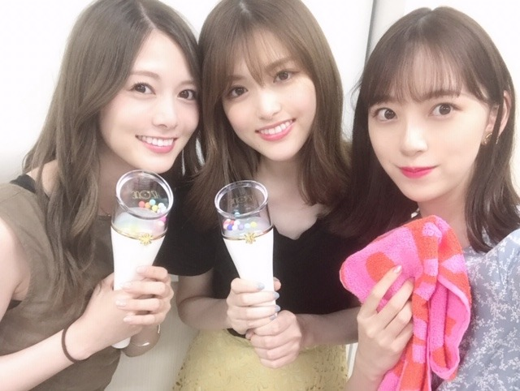

2019/0823Friお腹がすいてどうにかなりそう
やっほ~
いま目の前で日奈子とみり愛が歌を歌ってくれてます。笑
ほんとメンバーといると楽しくて毎日笑顔が絶えません☺︎
ここ数日、声がずっとハスキー状態で
エアコンかアレルギーかで喉をやられたみたいでとにかく腫れて熱が出ないように喉スプレーをマメにシュッシュしてます
痛みは引いたけどやっぱり声が少し低くて枯れてる。笑


わーい♡
白石さんと松村さんとマネージャーさんとIZ*ONEさんのライブを観に行ってきました！
松村さんとはファンミに続き♡
白石さんとはお初♡
横並びの席でみんなでワイワイ観ました
衣装も全部可愛くて、かわいい歌もかっこいい歌もパフォーマンスが凄くて終始引き込まれました
air planeが特に好きなので聴けて良かったです！
やっぱり客席で見るいろんな方のライブはとても勉強になるなぁ...
ステージに立っているだけじゃ気づけないことが沢山ありました、、ライブに生かさなきゃ☺︎
カンちゃんがライブ来てねって言ってくれていたので、今回行けたのでよかったです
MCで突然、「今日は...未央奈ちゃん！... など友達も観に来てくれています」とカンちゃんから私の名前が出て、あまりにも突然でびっくりして、嬉し恥ずかしくて松村さんの肩にもたれてしまいました。笑
嬉しいな♡
私も早くライブがしたくなりました！
踊りたい〜〜〜
改めて、歌って踊ることが本当に好きなんだなぁと。
神宮3日間、頑張りますね！！


カンちゃんとチェウォンちゃん♡
天使が二人~
カンちゃんがいつもチェウォンちゃんを呼んでくれます、、(,,•﹏•,,)照 恥ずかしくてまだちゃんとお話しできない、、

ユジンちゃんとも久しぶりでした！
あー！！って、来てくれて嬉しかったなぁ☺︎
また遊びたいな(^-^)
神宮ライブ、もうすぐかぁ~
夏終わるの早いですね
そういえばプライベートで夏らしいことしてないな
色つきそうめんをスーパーでお母さんと見つけて懐かしくて買ってみたくらい。笑
だから神宮でたくさん汗かいて皆さんと夏の思い出作るんだ(^.^)
ちなみに私のサイリウムカラーはオレンジx白です！
タオルやサイリウムやうちわよく見えるのでたくさん見つけてアイコンタクト取れたらいいな
目と目、合わせましょうね~
暑いので水分補給はマメに(`0`)！
気をつけて来てください
ではは
2019/08/23 17:30


コメント(297)
大好き！！
僕は喉痛めやすいんだけど、のど飴と、漢方が個人的にはおすすめよ〜
ライブビューイングからだけどってそっちかいなんてね～
ライブビューイングから拝見しますよ。
本当に
前から喉が強い方では無いのは知ってましたが、熱が出ないといいな。健康でいてくれると嬉しいです。明日の全握は無理しないでね。
I*ＺONEさんのライブ見に行ったんだね。楽しそうで何より。しゃべくり００７見たけどカンちゃん食べるの大好きなんだね。未央奈ちゃんと相性バッチリだ。笑
珍しいし豪華メンバーだね
神宮楽しみにしてるよ
ライブってやっぱり楽しいですよね！会場でしか味わえない独特の雰囲気がたまらない！！
ライブといえばもう少しで神宮！
自分は行けない！残念です！
暑さと雨？笑に負けないように精一杯楽しんで下さい！！
IZ*ONEさんのライブ見れたのですか～。ラッキーですね。韓流アイドルは歌もダンスも気合を入れてレッスンしているらしいので、同業者も勉強になりますよね。
来週はいよいよ夏の全ツオーラスです。玲香ちゃんのラストライブ、頑張ってね！！
ではまた。
声大丈夫?レコメンでも少しきつそうだったように聴こえたよ。
無理しないでね。
先輩方とライブ行ったんだね、楽しかったんだろうな。名前呼ばれるなんてテレるね。
いよいよ神宮だね。
長野くんだりから初日のみですけど会社休んで参加します。
目が合うように頑張るっす、一応アリーナなんで期待したいな。
神宮待ち遠しいな。
それではバイバイキーン！
ばりかわいいよ!
ライヴ楽しそう。
しかも白石さん、まっつんと姉さん達と豪華なショットやね✨
名前呼ばれたらビックリやね(笑)
なんか仲良さげで良いやん✨
神宮ライヴもうすぐやね✨
ホンマに玲香ちゃん寂しいな✨
楽しく盛り上がってください。
神戸より気持ち応援しときます(笑)✨
ではではまたね✨
体調には気をつけてくださいね。
喉も含めてやよ✨
ほなね、堀ちゃん☺
ブログ更新ありがとう
姐さんに囲まれて楽しそうだね！
ライブ！いいなあ！！！
神宮見に行くね〜
歌って踊るみおちゃんが見たい！
未央奈ちゃん喉大丈夫？(´△｀)
あまり無理しないでね(>ω<。)
IZ*ONEのコンサート行ったの(゜ロ゜)
羨ましいなー(* >ω<)
未央奈ちゃんファンであり、WIZ*ONEでもある自分としては最高の写真だよーー( ≧∀≦)
前のしゃべくり007見たかな？
IZ*ONE可愛すぎましたよねー(^-^*)
神宮は二日目行けるから、しっかり盛り上がろうね(＞∀＜)
勉強熱心な未央奈さん、すきです。
いつか目が合ったらうれしいなぁ
まっつんの肩に寄っかかるとか可愛すぎる！！！
まっつん羨ましい...笑笑
明日は全握だね！
未央奈ちゃんの所しかいなないからよろしくお願いします！
ブログ更新ありがと！！
神宮のライブ楽しみにしてる！
これからも無理せず頑張ってね！！
好きだを。☺☺
なんと
美女だらけ
まっちゅんとまいやんと未央奈さんに挟まれて写りたい
いつもメンバー同士仲良くて見てて幸せな気持ちになります
神宮ライブ頑張ってね
しかもカンちゃん♡
また2人の写真が見れるの楽しみにしてる〜
あ、京セラ行ったよ⸜❤︎⸝最高だった！
可愛くていい曲だよね♡♡♡
もちろん、乃木坂46もめっちゃ好き！
これからも応援してます！
まいやんもまちゅもIZ*ONEのライブ行ってたんだね！
乃木坂ちゃんはもちろん、IZ*ONEも好きなのでライブに行きましたよ！！
凄く楽しかったですよね！！
9月の埼玉も参戦します。
神宮参戦するので楽しみにしてます！
桜井キャプテンの卒業ライブも兼ねてますが、
未央奈頑張ってね！！
スクリーンだけど、全力で応援します！！
神宮で熱い夏を( ੭˙꒳ ˙)੭
お腹が空いてたのは、解消されましたかな？
力が湧かないから辛いから食べれたら良いのですが。
可愛い写真を沢山ありがとうございます！
2期の皆さんでのドレミダンスを見てみたいです。
もちろん未央奈さんソロが一番みたいですが。
喉は心配ですね。
レコメンの時は、痛々しかったですが、声を聞けたの嬉しかったですし、休んだりせず頑張ろうという姿勢に胸が熱くなりました。
ありがとうございました！
ライブは、お友達か2期の方と行かれたのかな？と思ってましたが、凄い方々と一緒だったのですね。
盛り上がったのでしょうね。
来てる事を言ってくれるなんて、ホント仲が良いのですね。
凄いです！
いよいよ来週末は、神宮ライブですね。
今年の夏は、ホットギミックに始まり、神宮ライブで幕を閉じるなんて最高の夏になりそうです。
自分は、2日目と3日目に行きます！
サイリウムとマフラーとうちわのフルセットで行こうかな、と思ってます。
最高の夏の思い出にしたいですね。
チケット取れなかった人、大阪ドームの2日目に行くはずだった人、遠くて来れない人、どうしても都合がつかない人、それぞれの思いを背負って弾けないとですね。
未央奈さんとの呼び方にしようかと思います。
まだまだ知らない事だらけですが。
さん付けだと距離感感じるかな？
人としてリスペクトしてるので、そこは守りたいのです。
これからもよろしくお願いします！
お身体にはお気をつけて。
喉の回復を待っております。
頑張って行きましょう！
レコメン！とっても面白かったですよー！
ブルーの花柄ワンピ姿も爽やかでしたし、
ドレミダンスとハートポーズも可愛いな♡
2期生でカラオケ行った話も楽しかったし、
ナイスでキャッチーな放送内容でしたよ♡
みおちゃんの声をとっても心配してますが、
メンバーが歌ってくれてて嬉しいですよね♪
先輩メンバー達とライブに行ったのですね！
IZ*ONEさんのレベルも素晴らしいですね☆
IZ*ONEさんと仲良くて微笑ましいですし、
みおちゃんのコミュ力も素晴らしいですよ☆
今年の夏は暑過ぎて楽しめなかったから、
乃木坂で活動できててとても光栄ですよね☆
神宮ライブに向けてスタミナ付けて下さい！
神宮ライブこそ日本の一大夏祭りですよー☺
今週もレコメン面白かった！
録音放送もいいけど、やっぱり生放送はいいね（＾ν＾）
でも喉が心配、、、お大事にしてね。
そして、全国ツアーラスト神宮最後まで駆け抜けてねー！！！
未央奈の笑顔でみんなを幸せにしてください！
ライブ行って発散できてみたいで良かった！
神宮初日行くけど、外野席で遠いからタオル掲げても見えないよね、でもオレンジ×白のサイリウムいっぱい振るね♪
IZONEのメンバーとも交友があったなんて、
驚きです。未央奈ちゃんもIZONEみたいな、
パフォーマンス神宮ライブで観たい。
喉ほうが、良くなるように。
それでは体調に、きおつけて。
まいやんとの写真もっとたくさん欲しいです！
喉の調子が早く良くなればいいですね！
IZ*ONEさんのライブ、いいなぁ。
一緒に行ったメンバーも良かったですね！
とりあえず状態が良くなることを祈っています！！！
これからも応援しています！！！
アイズワンのライブ、まいちゃんとまっちゅんと行ったんだね~（ ; ; ） 3人ともかわいいです！その後のレコメンもおつかれさまでした
ライブって本当に楽しいし乃木坂のライブいつも感動してしまうよ！今年は行けなかったけど…
神宮行きたかった（ ; ; ）
ライブ頑張ってね！体調大丈夫？心配…
声が少しでもよくなりますように
全握楽しみすぎる~♡
未央奈ちゃんは私の天使です
2期生とのカラオケのショット見たかったな。
白石さんと、松村とのショットもgoodですよ。
明日かな?全国握手会だね、喉の調子悪い中がんばってね。
来週は神宮だね、こっちもがんばれ！
次のブログも楽しみにしてまーす。
では
私も最近喉痛くて、扇風機のせいだと思ってたけど、上顎痒くなるから花粉かもしれないし風邪かもしれないし…。喉の痛みって原因が分かりにくいよね…お大事にね！
違う視点から見ると新しく気づくことっていっぱいあるよね。
大阪のライブ凄い良かったから、神宮は当たればライビュで見るからね！夏の良い思い出にしてね♪
喉お大事にー！！
神宮ライブがんばれ！！
自分もIZ*ONE好きやから一度は行ってみたいなぁ！！
カンちゃん、ユジンちゃん可愛いよね！
２期生との仲の良さ、素敵です。
一緒のライブに行ってくれる素敵な先輩も素敵ですね。
ライブ楽しんで下さいね。
コメントする